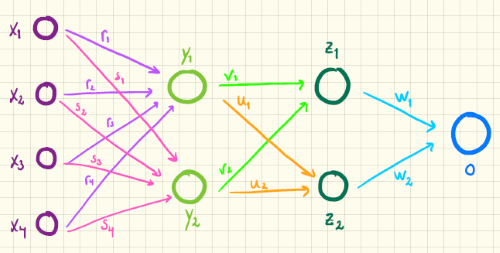

| 240 | 240 | 240 | 150 | 100 | 100 | 150 | 240 | 240 | 240 |
| 240 | 240 | 240 | 150 | 100 | 100 | 150 | 240 | 240 | 240 |
| 240 | 240 | 240 | 150 | 100 | 100 | 150 | 240 | 240 | 240 |
| 240 | 240 | 240 | 150 | 100 | 100 | 150 | 240 | 240 | 240 |
| 240 | 240 | 240 | 150 | 100 | 100 | 150 | 240 | 240 | 240 |
| 240 | 240 | 240 | 150 | 100 | 100 | 150 | 240 | 240 | 240 |
| 240 | 240 | 240 | 150 | 100 | 100 | 150 | 240 | 240 | 240 |
| 240 | 240 | 240 | 150 | 100 | 100 | 150 | 240 | 240 | 240 |
| 240 | 240 | 240 | 150 | 100 | 100 | 150 | 240 | 240 | 240 |
| 240 | 240 | 240 | 150 | 100 | 100 | 150 | 240 | 240 | 240 |
Kunstige neurale netværk
Denne note giver en grundig gennemgang af matematikken bag kunstige neurale netværk.
Hvad er kunstig intelligens og hvad skal vi med det?
Forestil dig at du gerne vil have en funktion \(f\), som tager et billede som input og som output fortæller dig, om der er en hund på billedet eller ej. Det kan illustreres sådan her:
Okay, det er måske ikke så tit, at man har brug for en funktion, som kan detektere, om der er en hund på et billede, men hvad så hvis funktionen i stedet kan afgøre, om der er en kræftknude på et røntgenbillede? Eller hvis den kan genkende håndskrevet tekst? Sidstnævnte bliver for eksempel flittigt brugt til sortering af breve. Vi ønsker os i virkeligheden at være i stand til at programmere en funktion, som kan "tænke" som et menneske. Når jeg ser et billede, kan jeg på ingen tid afgøre, om der er en hund på billedet eller ej. Står jeg med et brev i hånden, kan jeg som regel også læse navn og adresse. En læge vil også kunne kigge på et røntgenbillede og afgøre, om der er en kræftknude eller ej. Det er i bund og grund, det vi forstår ved kunstig intelligens. At få computeren til at "tænke" som et menneske. Nu kunne man måske godt indvende "hvad skal det til for?". Der er vel ingen grund til at få en computer til at finde kræftknuder på et røntgenbillede, hvis vi allerede kan få en læge til det? Men hvad nu, hvis computeren faktisk kan opdage kræftknuder tidligere end lægen? Eller hvad hvis man har så mange røntgenbilleder, at det vil være smart, at få en computer til at kigge dem igennem først?
Hvordan laver man en funktion, som kan finde "ting" på billeder?
Lad os sige, at vi nu kan se fidusen med den der lidt mærkelige funktion, som kan tage et billede som input, og som output kan fortælle et eller andet om billedet. Men det er jo ikke ligefrem den slags input og output, som vi plejer at arbejde med. Vi er for eksempel vant til at se på en eksponentialfunktion, der som input kan tage et hvilket som helst reelt tal og som output giver et positivt reelt tal. Vi plejer at sige, at funktionens defintionsmængde \(Dm(f)=\mathbb{R}\) og at funktionens værdimængde \(Vm(f)=\mathbb{R}_+\). Det kan også skrives sådan her: \[f: \mathbb{R} \rightarrow \mathbb{R}_+\] Men hvordan giver man så et billede som input? Digitale billeder består af en masse "pixels". En pixel svarer til et lille kvadratisk udsnit af billedet, som lidt forenklet er vist på figur 2.
Du har sikkert prøvet at zoome rigtig langt ind på et digitalt billede og set, at det ender med at bestå af små "kasser". Hvis billedet er sort-hvid, så kan farven på hver enkelt pixel repræsenteres ved et tal mellem \(0\) og \(255\). Hvis værdien er \(0\), er pixlen sort, hvis værdien er \(255\) er pixlen hvid og alt imellem \(0\) og \(255\) repræsenterer gråtoner. Hvis billedet er med farver, bruger man tre værdier mellem \(0\) og \(255\) til at repræsentere farven (RGB-farver: rød, grøn og blå), men lad os bare for enkelthedens skyld antage, at vi kun betragter sort-hvid billeder. Hvis mit billede er et \(8 \times 8\) pixels som på figur 2, så kan jeg altså repræsentere billedet vha. en vektor med \(64\) dimensioner! Det vil sige, at min funktions definitionsmængde i virkeligheden er en delmængde af: \[Dm(f) = \mathbb{R}^{64} \quad\text{eller rettere}\quad Dm(f) = \{0, 1, \dots, 255\}^{64}\] Lad os sige, at vi gerne vil have vores funktion til at finde en hund eller en kræftknude på billedet. Så kunne funktionens værdimængde såmænd bare være: \[Vm(f) = [0,1]\] Her vil tolkningen så for eksempel kunne være, at hvis outputværdien \(o \geq 0,5\), så er svaret "ja" (det er en hund) og hvis \(o<0.5\), så er svaret "nej". Vi kunne altså bruge outputværdien til at lave følgende forudsigelse/prædiktion: \[ \textrm{prædiktion}= \begin{cases} \textrm{ja} & \textrm{hvis } o \geq 0,5 \\ \textrm{nej} & \textrm{hvis } o < 0,5 \\ \end{cases} \tag{1}\] Så i et lidt forenklet setup leder vi altså efter en funktion, som tager en \(64\)-dimensional vektor som input, og som output leverer et tal i intervallet \([0,1]\): \[ f: \mathbb{R}^{64} \rightarrow [0,1] \] Så langt så godt. Men hvad gør vi så nu? Skal vi sige, at hvis der findes nogle forholdsvis mørke pixels i midten og nogle mørke pixels, som stikker op fra de andre mørke pixels (halen), så er det en hund...? Det virker ikke umiddelbart specielt anvendeligt. Og hvad nu hvis hunden sidder på sin hale eller man kun kan se dens hoved? Inden for den tidligere klassiske kunstig intelligens ville man netop forsøge sig med denne fremgangsmåde, men AI-forskerne løb efterhånden panden mod en mur, ligesom vi noget forenklet har skitseret det her. Det virker simpelthen som en helt uoverskuelig opgave at skulle programmere en computer på den klassiske måde (a la "gør dit og dut og dat og hvis A så B ellers C... osv.") (Sørensen and Johansen 2020). Problemet er blandt andet, at vi jo faktisk ikke en gang selv fuldstændigt og i detaljer kan forklare, hvordan vi selv genkender en hund på et billede. Det er "bare" noget vores hjerne gør (fordi den i virkeligheden har øvet sig på rigtig mange "hundebilleder"). Det var netop denne erkendelse, som førte til udviklingen af kunstige neurale netværk: Hvis vi ikke selv præcist og detaljeret kan forklare, hvad vores hjerne gør, så skulle vi måske i stedet prøve at programmere vores computer, så den efterligner den måde den menneskelige hjerne fungerer på. Man vendte sig derfor mod biologien (Baktoft 2014) og blev inspireret af den måde millionvis af neuroner i hjernen kommunikerer med hinanden på (men det må du hellere spørge en biologilærer om). Man kan derfor tænke på kunstige neurale netværk som en forsimplet model af den menneskelige hjerne. Det får også den konsekvens, at vores funktion ender med at blive lidt magi. Vi kan ikke nødvendigvis forklare, hvorfor den præcis ser ud som den gør, men vi kan blot i sidste ende forhåbentlig konstatere, at det virker! Det er faktisk lidt grænseoverskridende. Vi er jo for eksempel vant til at kunne fortolke på de konstanter, som indgår i en lineær funktion, der er anvendt i en given sammenhæng. Men her må du glemme alt om at tillægge de konstanter, vi nu er på jagt efter, nogen som helst betydning!
VIDEO: Kunstige neurale netværk 1
I denne video forklarer vi lidt om, hvad et kunstigt neuralt netværk er samt hvilke input- og outputværdier, man kan bruge.
Hvordan virker et kunstigt neuralt netværk?
Kunstige neurale netværk som bruges i den virkelige verden består som regel af millionvis af de såkaldte neuroner. For at holde tingene simple vil vi her begrænse os til nogle få. Forståelsesmæssigt mister man ingenting, notationen bliver blot lidt simplere. På figur 3 ser du et sådant simpelt kunstigt neuralt netværk, hvor alle cirklerne repræsenterer disse neuroner. I første omgang ser det måske lidt uoverskueligt ud, men vi tager det et skridt ad gangen.

Det første man kan se er, at et kunstigt neuralt netværk består af et inputlag (repræsenteret ved de fire lilla cirkler) og et outputlag (repræsenteret ved den blå cirkel). De fire værdier \(x_1, x_2, x_3\) og \(x_4\) svarer til de inputværdier, vi tidligere har talt om. Det kunne for eksempel være værdier, som repræsenterer gråskalaværdier på et \(2 \times 2\) pixels billede (det er selvfølgelig et lidt kedeligt billede, men tænk på at principperne her kan skaleres op). Vi har været vant til at se på vektorer i planen. Inputværdierne her svarer faktisk til en vektor i det firedimensionale rum: \[ \vec{x}= \begin{pmatrix} x_1 \\ x_2 \\ x_3 \\ x_4 \end{pmatrix} \] Outputværdien \(o\) kunne være et tal mellem \(0\) og \(1\) og man kan for eksempel prædiktere vha. udtrykket i (1).
Derudover indgår der to skjulte lag, som er vist ved de lysegrønne og mørkegrønne cirkler. Det er dem, som udgør selve "maskinrummet" i det kunstige neurale netværk. Lad os starte med at se på cirklen, hvor der står \(y_1\). Pilene op til neuronen, hvor der står \(y_1\), viser, at den modtager alle fire inputværdier \(x_1, x_2, x_3\) og \(x_4\). Disse fire værdier bruges til at beregne \(y_1\). Vi starter med at udregne: \[ r_1 \cdot x_1 + r_2 \cdot x_2 + r_3 \cdot x_3 + r_4 \cdot x_4 + r_0 \tag{2}\]
Værdierne \(r_1, r_2, r_3\) og \(r_4\) kalder man for vægte. Hvis for eksempel \(r_1\) er stor og \(r_2, r_3\) og \(r_4\) er tæt på \(0\), så vil \(r_1 \cdot x_1\) også blive stor (med mindre \(x_1\) er meget tæt på \(0\)) og \(r_2 \cdot x_2+r_3 \cdot x_3+r_4 \cdot x_4\) vil være tæt på \(0\). På den måde vil inputværdien \(x_1\) altså få stor indflydelse på udtrykket i (2) - man siger, at \(x_1\) kommer til at vægte højt.
Værdien \(r_0\) kaldes for en "bias" og det er altså en konstant størrelse, som bliver lagt til uafhængig af inputværdierne. Du skal tænke på ovenstående udtryk, som du tænker på en lineær funktion \(y=a \cdot x + b\). Her er der bare lige lidt flere \(x\)-værdier og \(a\) og \(b\) er skiftet ud med \(r\)’er.
Værdien af udtrykket i (2) kan være et hvilket som helst reelt tal. Ofte vil man være interesseret i, at den værdi der "kommer ud af" neuronen er et tal mellem \(0\) og \(1\). Til det bruges ofte den såkaldte "sigmoid"-funktion, som er defineret sådan her: \[ \sigma(x)=\frac{1}{1+\mathrm{e}^{-x}} \tag{3}\] Grafen for sigmoid-funktionen ses i figur 4. Her kan man se, hvordan ethvert reelt tal bliver afbildet over i et tal mellem \(0\) og \(1\).
Sigmoid-funktionens differentialkvotient har en bestemt egenskab, som det fremgår af denne sætning:
Sætning 1 Om sigmoid-funktionens differentialkvotient gælder \[ \sigma'(x) = \sigma(x) \cdot (1 - \sigma(x)). \] Det vil sige, hvis \(y=\sigma(x)\) så er \[ y' = y \cdot (1 - y). \]
Beviset er ikke så svært og overlades til læseren (se eventuelt også forløbet om aktiveringsfunktioner).
Det er netop sigmoid-funktionen, som bruges til at udregne \(y_1\): \[ y_1=\sigma(r_1 \cdot x_1 + r_2 \cdot x_2+r_3 \cdot x_3+r_4 \cdot x_4+r_0) \tag{4}\] Det vil sige, at \[ y_1=\frac{1}{1+\mathrm{e}^{-(r_1 \cdot x_1 + r_2 \cdot x_2+r_3 \cdot x_3+r_4 \cdot x_4+r_0)}} \tag{5}\]
Nu beregnes \(y_2\) helt tilsvarende, men med andre vægte. Før kaldte vi vægtene for \(r_1, r_2\) osv. De nye vægte vælger vi nu at kalde for \(s_1, s_2, \dots\), som det også er vist på figur 3. Vi definerer altså \[ y_2=\sigma(s_1 \cdot x_1 + s_2 \cdot x_2+s_3 \cdot x_3+s_4 \cdot x_4+s_0) \tag{6}\] Det vil sige, at \[ y_2=\frac{1}{1+\mathrm{e}^{-(s_1 \cdot x_1 + s_2 \cdot x_2+s_3 \cdot x_3+s_4 \cdot x_4+s_0)}} \tag{7}\]
Nu sker der det, at (de lysegrønne) neuroner i det andet lag "fyrer" deres \(y\)-værdier frem til alle neuronerne i det tredje lag. Disse værdier bliver nu brugt som inputs til beregning af de nye \(z\)-værdier (se igen figur 3. Vi kan nu, som vi har gjort ovenfor, definere de nye \(z\)-værdier i det tredje lag, idet vi nu kalder vægtene for \(v_1, v_2, u_1\) og \(u_2\), som det er vist på figur 3. Den eneste forskel fra tidligere er, at disse neuroner i vores eksempel kun modtager to og ikke fire inputværdier: \[ z_1=\sigma(v_1 \cdot y_1 + v_2 \cdot y_2 + v_0) \tag{8}\] og \[ z_2=\sigma(u_1 \cdot y_1 + u_2 \cdot y_2 + u_0) \tag{9}\]
Nu fyrer neuroner i det tredje lag deres \(z\)-værdier til det sidste outputlag, hvor der i dette simple eksempel kun er en enkelt neuron. Hvis vi ønsker, at outputtet \(o\) bliver et tal mellem \(0\) og \(1\) sætter vi \[ o=\sigma(w_1 \cdot z_1 + w_2 \cdot z_2 + w_0) \tag{10}\] Vi kan nu foretage den ønskede prædiktion ved for eksempel at bruge udtrykket i (1).
Det, vi her har beskrevet, kaldes for feedforward, fordi man sender input-værdierne fremad i netværket igennem alle lagene, indtil man har beregnet outputværdien (eller outputværdierne). Hvis man har et kunstigt neuralt netværk, som er "indstillet" korrekt - det vil sige, at alle vægte og bias har de "rigtige" værdier - så kan netværket bruges til at prædiktere med. Men hvordan i alverden sørger man for at vælge de "rigtige" værdier for alle vægte og bias? Husk på i virkelighedens verden taler vi om millioner af værdier! I vores simple eksempel havde vi kun 19 vægte: \[ \begin{pmatrix}r_0\\r_1\\r_2\\r_3\\r_4\end{pmatrix}\quad \begin{pmatrix}s_0\\s_1\\s_2\\s_3\\s_4\end{pmatrix}\quad \begin{pmatrix}v_0\\v_1\\v_2\end{pmatrix}\quad \begin{pmatrix}u_0\\u_1\\u_2\end{pmatrix}\quad \begin{pmatrix}w_0\\w_1\\w_2\end{pmatrix} \]
Det gøres ved hjælp af en fiks teknik, som kaldes for backpropagation, som vi nu skal se nærmere på.
VIDEO: Kunstige neurale netværk 2
I denne video giver vi et eksempel på et simpelt kunstig neuralt netværk og forklarer feedforward.
Hvordan træner man et kunstigt neuralt netværk?
Vi har altså nu set på, hvordan et kunstigt neuralt netværk virker, hvis vi kender værdierne for alle vægte og bias. Det store spørgsmål er nu, hvordan man får bestemt disse vægte, så netværket bliver så godt så muligt til at finde hundebilleder, eller hvad vi nu er på jagt efter.
Det første, vi må gøre, er at opstille et mål for, hvor godt et givet netværk er. Så lad os sige, at vi allerede har nogle vægte (i starten vælger man bare nogle mere eller mindre tilfældige vægte). Og lad os se på eksemplet hvor vi har fire inputværdier: \[\vec{x}= \begin{pmatrix} x_1 \\ x_2 \\ x_3 \\ x_4 \end{pmatrix}\] som vi kan tænke på som pixelværdier på et billede af en hund (det er helt håbløst at tro, at et billede af en hund kan repræsenteres ved fire pixelværdier, men lige nu er det principperne, der er det vigtigste). For at træne et netværk er man også nødt til at fortælle netværket, hvad der så rent faktisk er på billedet. Ellers får vi aldrig netværket til at forstå noget som helst, hvis ikke vi sammen med inputværdierne også kender den ønskede prediktion. Tænk på da du som lille barn lærte at genkende hundebilleder i en billedbog. Det lærte du kun, fordi der i timevis inden havde siddet en voksen og fortalt dig hvilke billeder, der forestillede en hund og hvilke der ikke gjorde. Den samme information må vi også give netværket. Så sammen med input værdien \(\vec{x}\), giver vi også en såkaldt target-værdi \(t\). Her sætter vi: \[ t= \begin{cases} 1 & \textrm{hvis billedet er af en hund} \\ 0 & \textrm{ellers} \\ \end{cases} \tag{11}\] Sender vi inputværdierne repræsenteret ved vektoren \(\vec{x}\) ind i netværket, så vil netværket returnere en outputværdi \(o\) mellem \(0\) og \(1\). Som tidligere vil vi tolke det på den måde, at netværket mener, at vi står med et billede af en hund hvis \(o\geq 0.5\), og hvis \(o<0.5\) så vil netværket sige, at det ikke er en hund. Et netværk, som er god til at genkende hundebilleder, vil opføre sig sådant, at hvis inputværdien \(\vec{x}\) svarer til et hundebillede (dvs. \(t=1\)), så vil \(o\) være tæt på \(1\). Og omvendt hvis inputværdien \(\vec{x}\) ikke svarer til et hundebillede (dvs. \(t=0\)), så vil \(o\) være tæt på \(0\). Det vil sige, at et godt netværk har den egenskab at \[t-o \approx 0\] Læg mærke til at forskellen her både kan være positiv og negativ, vi vil bare gerne have, at den er tæt på \(0\).
Det kan vi nu bruge til at definere det, man kalder for en error- eller tabsfunktion \(E\). For et givet input \(\vec{x}\) med target-værdi \(t\) og hvor netværket giver outputværdien \(o\) definerer vi tabsfunktionen \(E\) på denne måde: \[ E = \frac{1}{2}(t-o)^2 \tag{12}\] Bemærk, at hvis der er stor forskel på \(t\) og \(o\) (hvilket vi jo ikke er interesseret i), så vil fejlen også være stor. Og omvendt hvis der er lille forskel på \(t\) og \(o\), så vil fejlen være lille. Desuden vil fortegnet på fejlen forsvinde, fordi vi opløfter i anden. At vi ganger med \(1/2\) viser sig bekvemt senere, men det er i princippet underordnet.
I virkeligheden vil man have rigtige mange træningsdata med tilhørende target- og outputværdier. Forestil dig at vi nummerer alle disse target- og outputværdier på følgende måde: \[(t_1, o_1), (t_2, o_2), (t_3, o_3), \dots, (t_n, o_n)\] Og da vil man definere tabsfunktionen ved at lægge alle de kvadrerede fejl sammen: \[ \begin{aligned} E &= \frac{1}{2} ((t_1-o_1)^2+(t_2-o_2)^2+\cdots+(t_n-o_n)^2) \\ &= \frac{1}{2} \sum_{i=1}^n (t_i-o_i)^2 \end{aligned} \]
Det korrekte er at bruge denne tabsfunktion, men for at holde tingene simple, vælger vi her kun at se på det tilfælde, hvor vi hele tiden ser på et træningseksempel ad gangen og på den baggrund opdaterer vægtene. Altså vil vi begrænse os til at se på tabsfunktionen i (12).
Ønsket er nu, at bestemme biasene og vægtene (lad os bare samlet set kalde dem for vægtene fremover): \[ r_0, r_1, r_2, r_3, r_4, s_0, s_1, s_2, s_3, s_4, v_0, v_1, v_2, u_0, u_1, u_2, w_0, w_1, w_2 \] sådan at tabsfunktionen \(E\) bliver så lille som mulig. Det giver jo god mening! Find de vægte som gør, at netværket begår så lille en fejl, som overhovedet mulig. Ja da - det er det, vi gør! Vi betragter nu tabsfunktionen, som en funktion af alle vægtene: \[\begin{align*} E(r_0, r_1, r_2, r_3, r_4, s_0, s_1, s_2, s_3, s_4, &v_0, v_1, v_2, u_0, u_1, u_2, w_0, w_1, w_2) \\ &=\frac{1}{2} (t-o)^2 \end{align*}\] Det ser umiddelbart lidt mærkeligt ud, for vægtene ser jo ikke ud til at indgå på højreside i ovenstående udtryk, men husk på at outputværdien \(o\) jo netop bliver beregnet vha. feedforward, som er baseret på alle vægtene.
Vi vil altså gerne finde minimum for tabsfunktionen \(E\). Man finder minimum for en funktion af to variable ved at gøre følgende: Sæt de partielle afledede lig med \(0\), løs de to ligninger, og tjek op på at det rent faktisk er et minimum, du har fundet (og ikke for eksempel et lokalt maksimum eller et saddelpunkt).
I princippet kunne vi gøre noget tilsvarende her: \(E\) er en funktion af \(19\) variable (de \(19\) vægte). Sæt alle de \(19\) partielle afledede lig med \(0\), løs ligningerne og find ud af, at det er et (evt. lokalt) minimum, du har fundet. Problemet bliver bare, at I virkelighedens verden har vi ikke kun \(19\) vægte, men millionvis af vægte. Så det er en megastor opgave at finde funktionsudtryk for alle de partielle afledte og selvom vi forestiller os, vi kunne finde dem, eller de faldt ned fra månen, er der stadig et problem: At løse alle de millionvis af ligninger, som vi får, når vi sætter de partielle afledede lig med \(0\), viser sig simpelthen at blive alt for beregningsmæssigt tungt. Læs: Det tager for lang tid og/eller fylder for meget i hukommelsen - selv for en stor computer!
Derfor er man nødt til at gøre noget andet. Forestil dig at tabsfunktionen kun afhænger af to variable \(E(v,w)\)1 og at grafen for den ser ud, som vist i figur 5. Her kan du se, at tabsfunktionen har to lokale minima og ét globalt minimum. Vi vil allerhelst finde vægtene sådan, at vi ender i det globale minimum, men kan vi kun finde et lokalt minimum, så kan det også gå (selvom det selvfølgelig ikke er det optimale). Forestil dig at grafen er et landskab. At finde grafens minimum svarer til, at du gerne vil ned i den dybeste dal. Din placering i landskabet svarer til, at du står i et eller andet punkt i planen \((v_0,w_0)\) og din højde i vertikal retning er \(E(v_0,w_0)\). Gradienten har den egenskab, at hvis du i dette punkt gerne vil bevæge dig i den retning, som er allerstejlest, så skal du gå i retningen givet ved gradienten: \[ \nabla E(v_0,w_0) = \begin{pmatrix} \frac{\partial E }{\partial v}(v_0,w_0) \\ \\ \frac{\partial E }{\partial w}(v_0,w_0) \end{pmatrix} \] Det betyder også, at hvis du gerne vil gå allermest ned ad bakke, så skal du gå i den stik modsatte retning - altså minus gradienten: \[ - \nabla E(v_0,w_0) = \begin{pmatrix} - \frac{\partial E }{\partial v}(v_0,w_0) \\ \\ - \frac{\partial E }{\partial w}(v_0,w_0) \end{pmatrix} \] Dét trick skal vi bruge! Vi starter altså med at vælge nogle mere eller mindre tilfældige vægte. Det svarer til, at du står et mere eller mindre tilfældigt sted i landskabet på figur 5. Så vælger vi at gå et lille stykke i den retning, hvor det går allermest ned ad bakke, ved at følge retningen angivet ved den negative gradient. Når vi står der, beregner vi gradienten i det punkt2, og går igen et lille stykke i den retning, som den negative gradient angiver. Sådan fortsætter vi, og hvis vi sørger for ikke at tage alt for store skridt ad gangen, så vil vi til sidst ende i et lokalt minimum (der er desværre ingen garanti for, at vi vil ende i et globalt minimum3).
1 Du kan med god ret spørge: "Hvorfor nu det?". I virkeligheden afhænger den jo af millionvis af variable. Svaret er, at hvis vi skal forestille os grafen for tabsfunktionen, så er vores forestillingsevne begrænset til 3 dimensioner. Derfor må vi lige for en stund antage, at tabsfunktionen kun afhænger af to variable!
2 Hov! Vi kan jo ikke finde funktionsudtryk for alle de partielle afledte, så hvad foregår der her? Jo, vi vil se, at vi ved backpropagation kan udregne de partielle afledte i et punkt uden at finde et funktionsudtryk.
3 Hvis netværket ikke ender med at opføre sig tilfredsstillende, kan man jo prøve at starte et nyt tilfældigt sted i landskabet og gentage proceduren. Hvis man er heldig, lander man i et andet lokalt eller globalt minimum, hvor minimumsværdien er mindre end den tidligere.
4 Hvis vi ændrer \(s_1\) for hurtigt (svarende til at \(\eta\) er for stor), så kan vi risikere at "træde forbi" det søgte minimum. Omvendt, hvis vi ændrer \(s_1\) for langsomt (svarende til at \(\eta\) er for lille), så kommer det til at tage alt for lang tid at bestemme minimum. Man er derfor typisk nødt til at prøve sig lidt frem for at finde en passende værdi af \(\eta\).
Idéen er altså, at vi vælger en værdi for hver af de \(19\) vægte. Lad os bare som eksempel så på vægten \(s_1\). Så beregner vi den partielle afledede \[ \frac{\partial E}{\partial s_1} \] og så ændrer vi værdien af \(s_1\) en lille smule i retning af den negative partielle afledede. Vi viser, at vi ændrer værdien af \(s_1\) til en ny værdi, ved at bruge en pil: \[ s_1^{\textrm{ny}} \leftarrow s_1 - \eta \frac{\partial E}{\partial s_1} \tag{13}\] Lad os lige bruge lidt tid på at forstå, hvad der står her! Venstresiden er den nye værdi af vægten \(s_1\). Denne værdi beregnes ved hjælp af udtrykket på højresiden. Her angiver \(s_1\) den gamle/oprindelige værdi af \(s_1\). Symbolet \(\eta\) (udtales "eta") er her et lille, positivt tal (for eksempel \(0.05\)) som angiver, at vi bare gerne vil ændre \(s_1\) en lille smule4. Derfor må \(\eta\) ikke være al for stor. Man kalder også \(\eta\) for læringsraten eller på engelsk: learning rate. Endelig viser \(-\frac{\partial E}{\partial s_1}\), at vi ønsker, at ændre alle vægte i retning af den negative gradient. Det vil nu sige, at alle \(19\) vægte opdateres vha. formler, som den i (13). Altså skal vi nu bare have fundet et udtryk for alle de \(19\) partielle afledede, og vi er i mål! Dette er netop, hvad backpropagation algoritmen gør, som vi gennemgår i det følgende.
VIDEO: Kunstige neurale netværk 3
I videoen her forklarer vi, hvad targetværdier er, og hvordan tabsfunktionen defineres.
VIDEO: Kunstige neurale netværk 4
I denne video bliver gradientnedstigning forklaret.
Opdatering af \(w\)-vægtene
Når man bruger backpropagation, starter man med at finde de partielle afledede for de vægte, som direkte påvirker outputværdien \(o\). På figur 3 fremgår det, at det er vægtene \(w_0, w_1\) og \(w_2\) (husk at vi kalder vores bias for \(w_0\)). Lad os starte med at finde den partielle afledede for \(w_1\). Ved at bruge kædereglen får vi: \[ \frac{\partial E}{\partial w_1} = \frac{d E}{d o} \cdot \frac{\partial o}{\partial w_1} \] Vi ved fra (12), at \(E=\frac{1}{2}(t-o)^2\) og derfor er: \[ \frac{d E}{d o} = \frac{1}{2} \cdot 2 \cdot (t-o) \cdot (-1) = -(t-o) \tag{14}\] Fra (10) har vi, at \(o=\sigma(w_1 \cdot z_1 + w_2 \cdot z_2 + w_0)\) og derfor får vi \[ \frac{\partial o}{\partial w_1} =\sigma'(w_1 \cdot z_1 + w_2 \cdot z_2 + w_0) \cdot z_1 \] Vi har tidligere vist, at \(\sigma'(z)=\sigma(z)(1-\sigma(z))\) og derfor har vi \[ \frac{\partial o}{\partial w_1} =\sigma(w_1 \cdot z_1 + w_2 \cdot z_2 + w_0)(1-\sigma(w_1 \cdot z_1 + w_2 \cdot z_2 + w_0)) \cdot z_1 \] Bruger vi nu, at \(o=\sigma(w_1 \cdot z_1 + w_2 \cdot z_2 + w_0)\) kan vi skrive ovenstående lidt mere kompakt: \[ \frac{\partial o}{\partial w_1} =o(1-o) \cdot z_1 \] Alt i alt får vi altså, at \[ \frac{\partial E}{\partial w_1} = \frac{d E}{d o} \cdot \frac{\partial o}{\partial w_1} = -(t-o) \cdot o \cdot (1-o) \cdot z_1 \tag{15}\] Vi kan nu udlede den første opdateringsregel for vægten \(w_1\) ved at bruge idéen fra (13): \[ w_1^{\textrm{ny}} \leftarrow w_1 - \eta \cdot \frac{\partial E}{\partial w_1} \] Indsættes udtrykket fra (15), får vi \[ w_1^{\textrm{ny}} \leftarrow w_1 - \eta \cdot (-(t-o) \cdot o \cdot (1-o) \cdot z_1) \] Det vil sige, at \[ w_1^{\textrm{ny}} \leftarrow w_1 + \eta \cdot (t-o) \cdot o \cdot (1-o) \cdot z_1 \] Det er værd at dvæle lidt ved opdateringsleddet \(\eta \cdot (t-o) \cdot o \cdot (1-o) \cdot z_1\) på højresiden, fordi det faktisk giver intuitiv god mening. For det første er \(\eta\), det vi som sagt kalder for vores learning rate - et lille positivt tal, som sørger for, at vi ikke tager for store skridt på vores vej ned i dalen (til det lokale minimum). Faktoren \(t-o\) er jo netop fejlen. Nemlig forskellen mellem det vi ønsker \(t\) (target), og det som netværket giver \(o\) (output). Jo større fejl/forskel, desto mere må vi justere vægten. Ser vi på faktoren \(o\cdot(1-o)\), så vil det være sådan, at hvis outputværdien \(o\) er tæt på enten \(0\) eller \(1\) (man siger at neuronen er "mættet"), så vil \(o\cdot(1-o)\) være tæt på \(0\). Det vil sige, at hvis outputværdien er tæt på \(0\) eller \(1\), så ændrer vi heller ikke så meget på vægten. Endelig er der faktoren \(z_1\), som er inputtet fra det foregående lag (se figur 3). Hvis værdien af denne er (numerisk) stor, så får det også stor betydning for opdateringsleddet (eller tænk på det omvendt: hvis \(z_1\) er tæt på \(0\), så har \(z_1\) alligevel ikke så stor indflydelse på outputværdien, og så giver det heller ikke mening at justere så meget på den tilhørende vægt \(w_1\)).
Det viser sig faktisk, at faktoren \((t-o) \cdot o \cdot (1-o)\) kommer til at gå igen rigtige mange gange i det følgende. Det bliver i længden lidt tungt at slæbe rundt på. Derfor vælger vi at definere \[ \delta = (t-o) \cdot o \cdot (1-o) \tag{16}\] og derfor kan opdateringsreglen for \(w_1\) nu også skrives: \[ w_1^{\textrm{ny}} \leftarrow w_1 + \eta \cdot \delta \cdot z_1 \tag{17}\]
Helt analogt med ovenstående kan man udlede opdateringsregler for \(w_2\) og \(w_0\). Resultatet er samlet her.
Men hvordan foregår det der med de opdateringsregler så egentligt? Jo altså vi starter med at sætte vægtene mere eller mindre tilfældigt. Så laver vi ved hjælp af vores træningseksempel \((\vec{x},t)\) et feedforward i netværket, som det er beskrevet i afsnit 3. Derfor får vi beregnet outputværdien \(o\) samt \(z_1\) og \(z_2\) (husk at \(z_1\) og \(z_2\) bruges til at beregne \(o\)). Desuden kender vi jo fra vores træningsdata target-værdien \(t\). Og voila! Alt hvad der indgår på højresiderne i ovenstående opdateringsregler har vi nu adgang til, og vi kan derfor beregne de nye \(w\) vægte.
Så mangler vi bare at finde opdateringsreglerne for de restende vægte!
VIDEO: Kunstige neurale netværk 5
I videoen her forklarer vi hvordan \(w\)-vægtene opdateres.
Opdatering af \(u\)- og \(v\)-vægtene
Vi går nu et trin længere tilbage i netværket - væk fra outputlaget. Her kan vi se neuronerne, som fyrer værdierne \(z_1\) og \(z_2\), som bliver påvirket af \(u\)- og \(v\)-vægtene. Lad os her starte med at bestemme opdateringsreglerne for \(v\)-vægtene. For at gøre det skal vi finde ud af hvordan \(v\)-vægtene påvirker neuronerne længere fremme i netværket. Se igen på figur 3. Her er det tydeligt, at \(v\)-vægtene påvirker den mørkegrønne neuron, som fyrer værdien \(z_1\), som igen påvirker outputværdien. Derfor kan vi bruge kædereglen på følgende måde: \[ \frac{\partial E}{\partial v_1} = \frac{d E}{d o} \cdot \frac{\partial o}{\partial z_1} \cdot \frac{\partial z_1}{\partial v_1} \] Vi ved allerede fra (14), at \[ \frac{d E}{d o} = -(t-o) \] Den partielle afledede af \(o\) med hensyn til \(z_1\) finder vi ved at bruge definitionen af outputværiden \(o\) i (10) \[ \begin{aligned} \frac{\partial o}{\partial z_1} &= \sigma'(w_1 \cdot z_1+w_2 \cdot z_2 + w_0) \cdot w_1 \\ &= \sigma(w_1 \cdot z_1+w_2 \cdot z_2 + w_0) \cdot (1-\sigma(w_1 \cdot z_1+w_2 \cdot z_2 + w_0)) \cdot w_1 \\ &= o \cdot (1-o) \cdot w_1 \end{aligned} \tag{18}\] hvor vi igen har brugt sætning 1. Og endelig ved at udnytte definitionen af \(z_1\) i (8) får vi, at \[\begin{align} \frac{\partial z_1}{\partial v_1} &= \sigma'(v_1 \cdot y_1+v_2 \cdot y_2 + v_0) \cdot y_1 \\ &= \sigma(v_1 \cdot y_1+v_2 \cdot y_2 + v_0) \cdot (1-\sigma(v_1 \cdot y_1+v_2 \cdot y_2 + v_0)) \cdot y_1 \\ &= z_1 \cdot (1-z_1) \cdot y_1 \end{align}\] Sætter vi det hele sammen får vi, at \[ \frac{\partial E}{\partial v_1} = \underbrace{-(t-o)}_{\frac{\partial E}{\partial o}} \cdot \underbrace{o \cdot (1-o) \cdot w_1}_{\frac{\partial o}{\partial z_1}} \cdot \underbrace{z_1 \cdot (1-z_1) \cdot y_1}_{\frac{\partial z_1}{\partial v_1}} \] og bruger vi definitionen af \(\delta\) i (16) får vi et lidt mere kompakt udtryk \[ \frac{\partial E}{\partial v_1} = -\delta \cdot w_1 \cdot z_1 \cdot (1-z_1) \cdot y_1 \] Opdateringsreglen for \(v_1\) bliver derfor \[ v_1^{\textrm{ny}} \leftarrow v_1 - \eta \cdot \frac{\partial E}{\partial v_1} \] og med det netop udledte udtryk for \(\frac{\partial E}{\partial v_1}\) får vi \[ v_1^{\textrm{ny}} \leftarrow v_1 - \eta \cdot (-\delta \cdot w_1 \cdot z_1 \cdot (1-z_1)\cdot y_1) \] Det vil sige, at \[ v_1^{\textrm{ny}} \leftarrow v_1 + \eta \cdot \delta \cdot w_1 \cdot z_1 \cdot (1-z_1) \cdot y_1 \] Læg igen mærke til, at når vi har været igennem et feedforward i netværket, så kender vi alle de størrelser, som indgår i ovenstående udtryk.
På helt tilsvarende vis kan man bestemme opdateringsreglerne for \(v_0\) og \(v_2\). De tre opdateringsregler for \(v\)-vægtene ses her:
Opdateringsreglerne for \(u\)-vægtene findes på præcis samme måde. Her skal man blot se, at \(u\)-vægtene har indflydelse på outputtet via \(z_2\) (se figur 3). Derfor skal man for eksempel finde den partielle afledede af \(E\) med hensyn til \(u_1\) ved at bruge kædereglen på denne måde \[ \frac{\partial E}{\partial u_1} = \frac{d E}{d o} \cdot \frac{\partial o}{\partial z_2} \cdot \frac{\partial z_2}{\partial u_1} \] Udregninger svarende til det netop gennemgåede giver os
VIDEO: Kunstige neurale netværk 6
I videoen her forklarer vi, hvordan \(v\)-vægtene opdateres.
Opdatering af \(r\)- og \(s\)-vægtene
Så er vi endelig fremme ved \(r\)- og \(s\) vægtene. Start lige med at tage en dyb indånding! Nu bliver det lidt mere kompliceret. Se på figur 3. Lad os starte med at finde den partielle afledede af \(E\) med hensyn til \(r_1\). Når man ser på netværket, kan man se, at \(r_1\) i første omgang påvirker \(y_1\), \(y_1\) påvirker både \(z_1\) og \(z_2\), som så til sidst påvirker outputværdien \(o\). Det kan illustreres sådan her \[ \begin{matrix} & & & & z_1 & & & \\ & & & \nearrow & & \searrow & & \\ r_1 & \rightarrow & y_1 & & & & \rightarrow & o \\ & & & \searrow & & \nearrow & & \\ & & & & z_2 & & & \\ \end{matrix} \]
Balladen er, at \(y_1\) både påvirker \(z_1\) og \(z_2\), og det gør det hele lidt mere kompliceret. Lad os lige starte med at se bort fra det. Ifølge kædereglen får vi så: \[ \frac{\partial E}{\partial r_1} = \frac{d E}{d o} \cdot \frac{\partial o}{\partial y_1} \cdot \frac{\partial y_1}{\partial r_1} \] Men så var det jo, at \(o\) i virkeligheden afhænger af \(y_1\) både via \(z_1\) og \(z_2\). Man kunne skrive det sådan her: \[ o(z_1(y_1), z_2(y_1)) \] Bemærk, at \(z_1\) og \(z_2\) jo også afhænger af \(y_2\), men når vi skal differentiere med hensyn til \(y_1\), så er \(y_2\) at betragte som en konstant. Og når konstanter, som er blevet lagt til, bliver differentieret, så giver det som bekendt \(0\).
Derfor: For at finde den partielle afledede af \(o\) med hensyn til \(y_1\) må vi benytte kædereglen for funktioner af flere variable. Den siger, at \[ \frac{\partial o}{\partial y_1} = \frac{\partial o}{\partial z_1} \cdot \frac{\partial z_1}{\partial y_1} + \frac{\partial o}{\partial z_2} \cdot \frac{\partial z_2}{\partial y_1} \] Det samlede udtryk for den partielle afledede af \(E\) med hensyn til \(r_1\) bliver derfor \[ \frac{\partial E}{\partial r_1} = \frac{d E}{d o} \cdot \left( \frac{\partial o}{\partial z_1} \cdot \frac{\partial z_1}{\partial y_1} + \frac{\partial o}{\partial z_2} \cdot \frac{\partial z_2}{\partial y_1} \right) \cdot \frac{\partial y_1}{\partial r_1} \tag{19}\] Vi finder hver af de afledede, som indgår i ovenstående udtryk én ad gangen. Vi ved allerede fra (14), at \[ \frac{d E}{d o} = \frac{1}{2} \cdot 2 \cdot (t-o) \cdot (-1) = -(t-o) \] Vi ved også fra (18), at \[ \frac{\partial o}{\partial z_1} = o \cdot (1-o) \cdot w_1 \] Differentieres \(z_1\) (se (8)) med hensyn til \(y_1\) får vi \[\begin{align} \frac{\partial z_1}{\partial y_1} &= \sigma'(v_1 \cdot y_1 + v_2 \cdot y_2 + v_0)\cdot v_1 \\ &= z_1 \cdot (1-z_1) \cdot v_1 \end{align}\] hvor vi igen har brugt sætning 1 og definitionen af \(z_1\) i (8). Helt tilsvarende kan vi finde \(\frac{\partial o}{\partial z_2}\) og \(\frac{\partial z_2}{\partial y_1}\) (se (9)) \[ \frac{\partial o}{\partial z_2} = o \cdot (1-o)\cdot w_2 \] og \[ \frac{\partial z_2}{\partial y_1} = z_2 \cdot (1-z_2)\cdot u_1 \] Den sidste partielle afledede \(\frac{\partial y_1}{\partial r_1}\) finder vi ved at differentiere udtrykket for \(y_1\) i (4), hvor vi endnu engang udnytter sætning 1.
Indsætter vi nu alle de udtryk, som vi netop har udledt, i (19) får vi et temmelig langt udtryk for \(\frac{\partial E}{\partial r_1}\): \[\begin{align} \frac{\partial E}{\partial r_1} &= \underbrace{-(t-o)}_{\frac{dE}{do}}\cdot \\ &\Big( \underbrace{o\cdot(1-o)\cdot w_1}_{\frac{\partial o}{\partial z_1}} \cdot \underbrace{z_1\cdot(1-z_1)\cdot v_1}_{\frac{\partial z_1}{\partial y_1}}+\underbrace{o\cdot(1-o)\cdot w_2}_{\frac{\partial o}{\partial z_2}}\cdot \underbrace{z_2\cdot(1-z_2)\cdot u_1}_{\frac{\partial z_2}{\partial y_1}}\Big)\cdot \\ & \qquad \underbrace{y_1\cdot(1-y_1)\cdot x_1}_{\frac{\partial y_1}{\partial r_1}} \end{align}\] Og sætter vi \(o\cdot(1-o)\) uden for parentesen og erstatter \((t-o)\cdot o\cdot (1-o)\) med \(\delta\) får vi \[ \frac{\partial E}{\partial r_1} =-\delta \cdot \Big(w_1 \cdot z_1\cdot (1-z_1)\cdot v_1+w_2 \cdot z_2 \cdot (1-z_2)\cdot u_1 \Big) \cdot y_1\cdot (1-y_1) \cdot x_1 \] Helt i tråd med tidligere får vi altså følgende opdateringsregel for \(r_1\) \[r_1^{\textrm{ny}} \leftarrow r_1 - \eta \cdot \frac{\partial E}{\partial r_1} \] Det vil sige \[ r_1^{\textrm{ny}} \leftarrow r_1 + \eta \cdot \delta \cdot \Big(w_1 \cdot z_1\cdot (1-z_1)\cdot v_1+w_2 \cdot z_2 \cdot (1-z_2)\cdot u_1 \Big) \cdot y_1\cdot (1-y_1) \cdot x_1 \]
Udleder man tilsvarende opdateringsregler for \(r_2, r_3, r_4\) og \(r_0\) vil man se, at det eneste, som kommer til at ændre sig i ovenstående, er den sidste faktor \(x_1\), som bliver erstattet med henholdsvis \(x_2, x_3, x_4\) og \(1\). Derfor får vi samlet set
Opdateringen af \(s\)-vægtene foregår på samme måde. Hvis du ser på figur 3, kan du se, at alle \(s\)-vægtene påvirker \(y_2\), som så påvirker både \(z_1\) og \(z_2\), som i sidste ende påvirker outputtet \(o\). Ser vi generelt på vægten \(s_i\), hvor \(i=0, 1, 2, 3\) eller \(4\), har vi altså \[ \begin{matrix} & & & & z_1 & & & \\ & & & \nearrow & & \searrow & & \\ s_i & \rightarrow & y_2 & & & & \rightarrow & o \\ & & & \searrow & & \nearrow & & \\ & & & & z_2 & & & \\ \end{matrix} \] Som tidligere kan vi starte med at skrive \[ \frac{\partial E}{\partial s_i} = \frac{d E}{d o} \cdot \frac{\partial o}{\partial y_2} \cdot \frac{\partial y_2}{\partial s_i} \] og bruger vi igen kædreglen for funktioner af flere variable, får vi \[ \frac{\partial E}{\partial s_i} = \frac{d E}{d o} \cdot \left( \frac{\partial o}{\partial z_1} \cdot \frac{\partial z_1}{\partial y_2} + \frac{\partial o}{\partial z_2} \cdot \frac{\partial z_2}{\partial y_2} \right) \cdot \frac{\partial y_2}{\partial s_i} \] I ovenstående udtryk bliver det klart, at opdateringsreglerne vil blive ens bortset fra den sidste faktor.
Nu udledes alle de partielle afledede, fuldstændig som for \(r\)-vægtene og vi ender med følgende opdateringsregler for \(s\)-vægtene:
Det var faktisk det! Altså det blev jo en værre omgang bogstavgymnastik, men faktum er, at vi er i mål med at udlede backpropagation algoritmen for vores simple netværk i figur 3. Hurra for det!
VIDEO: Kunstige neurale netværk 7
I denne video forklares hvordan \(r\)-vægtene opdateres.
Neurale netværk helt generelt
Hvis du er helt vild - så kan du i noten om neurale netværk helt generelt læse mere om, hvordan man beskriver et neuralt netværk med et vilkårligt antal skjulte lag, og hvordan opdateringsreglerne bliver i det tilfælde. Det bliver lidt mere langhåret, men det er ikke umuligt!
Valg af tabsfunktion
I afsnit 4 definerede vi tabsfunktionen ved \[ E = \frac{1}{2}(t-o)^2 \] mens vi neurale netværk helt generelt så, hvordan denne tabsfunktionen kan generaliseres, når outputlaget har mere end én neuron. I alle tilfælde er der tale om en kvadratisk tabsfunktion, fordi vi ser på den kvadrerede forskel på target-værdi \(t\) og outputværdi \(o\). Men det er et valg at definere tabsfunktionen på denne måde, man kunne have defineret mange andre tabsfunktioner i stedet for. Egentlig ønsker vi blot en tabsfunktion \(E\) med følgende egenskaber:
\(E>0\) - fordi det giver bedst mening at tale om et positivt tab.
Hvis vi har et netværk, som klassificerer godt, så er \(E\) tæt på \(0\), og omvendt hvis netværket er dårligt til at klassificere, så er \(E\) langt væk fra \(0\).
Har en tabsfunktion disse egenskaber, så giver det mening at bestemme vægtene i netværket, så tabsfunktionen minimeres.
Faktisk viser det sig, at valget af den kvadratiske tabsfunktion kombineret med sigmoid aktiveringsfunktionen har nogle ulemper. For at forstå det, skal vi se på opdateringsreglerne for vægtene tættest på outputlaget. Men den notation, som vi anvendte i afsnit 4, fik vi for eksempel at \[ w_1^{\textrm{ny}} \leftarrow w_1 + \eta \cdot (t-o) \cdot o \cdot (1-o) \cdot z_1 \] Når vi træner netværket, ved vi jo ikke, hvilke værdier vægtene skal have - så vi starter med at vælge nogle mere eller mindre tilfældige værdier. Det betyder også, at indtil netværket er trænet, så vil den andel af træningseksemplerne, som klassificeres korrekt, ikke nødvendigvis være så stor. Det gør ikke så meget, hvis bare netværket lærer hurtigt - det vil sige, at netværket hurtigt får opdateret vægtene så andelen af træningseksemplerne, som klassificeres korrekt, bliver stor. Problemet med den kvadratiske tabsfunktion er, at man i nogle tilfælde kan komme ud for at dette ikke sker, men derimod at netværket lærer langsomt.
Problemet opstår, hvis startvægtene fejlagtigt kommer til at give en outputværdi \(o\), som enten er tæt på \(0\) eller \(1\). Hvis det sker, vil \(t-o\) være "stor" (fordi outputværdien er fejlagtig), men samtidig vil faktoren \(o \cdot (1-o)\) være tæt på \(0\) (fordi \(o\) enten er tæt på \(0\) eller på \(1\)). Derfor kan vi risikere, at \(w_1\)-vægten ikke bliver opdateret særlig meget, fordi \(t-o\) bliver ganget med et tal, som er tæt på \(0\). Sker dette kalder man det for slow learning.
Nu kunne man måske godt tænke, at det da ikke har noget med tabsfunktionen at gøre, men det har lige præcis noget med tabsfunktionen i kombination med sigmoid-funktionen at gøre. For at se det må vi genkalde os, hvor ovenstående opdateringsregel kom fra. Faktisk svarede \(t-o\) til \(-dE/do\) og \(o \cdot (1-o)\) var sigmoid-funktionen \(\sigma(w_0+w_1 \cdot z_1 + w_2 \cdot z_2)\) differentieret. Det vil sige: \[ w_1^{\textrm{ny}} \leftarrow w_1 + \eta \cdot \underbrace{(t-o)}_{-dE/do} \cdot \underbrace{o \cdot (1-o)}_{\sigma'(\cdots)} \cdot z_1 \tag{20}\] Hvis man derimod kunne vælge en tabsfunktion, som passer bedre sammen med sigmoid-funktionen, på den måde at forstå at faktoren \(o \cdot (1-o)\) vil forkorte ud i ovenstående udtryk, så vil man slippe af med problemet omkring langsom læring.
Nok ikke helt overraskende så kan man faktisk godt diske op med en sådan tabsfunktion! Den tabsfunktion, som passer godt sammen med sigmoid-funktionen, kaldes for cross-entropy tabsfunktionen og er defineret sådan her \[ E = - \left ( t \cdot \ln(o)+(1-t) \cdot \ln(1-o) \right ) \tag{21}\] Det ser jo ikke umiddelbart videre behageligt ud, og det er slet ikke oplagt, at det overhovedet er en tabsfunktion. Det vil sige, opfylder cross-entropy tabsfunktionen betingelserne listet ovenfor? Lad os starte med at undersøge om \(E>0\). For det første er target-værdien \(t\) altid enten \(0\) eller \(1\). Derfor er der følgende to muligheder: \[\begin{align} t=0: & \quad E=- \ln(1-o)\\ t=1: & \quad E=- \ln(o) \end{align}\] Vi ved også, at outputværdien \(o\) ligger mellem \(0\) og \(1\). Altså \(0<o<1\). Derfor vil også \(1-o\) ligge mellem \(0\) og \(1\). På figur 6 ses grafen for den naturlige logaritmefunktion \(\ln(x)\). Her ser vi, at hvis \(0<x<1\), så vil \(\ln(x)\) være negativ. Derfor kan vi fra ovenstående udtryk se, at \(E\) vil være positiv (fordi både \(\ln (1-o)\) og \(\ln(o)\) vil være negative).
Vi mangler nu at redegøre for, at \(E \thickapprox 0\), hvis netværket er god til at klassificere. Der er igen to muligheder alt efter om \(t=0\) eller om \(t=1\). Hvis \(t=0\) og netværket er godt, så vil \(o\) også være tæt på \(0\), og \(1-o\) vil være tæt på \(1\). I det tilfælde får vi \[ E = - \left ( \underbrace{t}_{=0} \cdot \ln(o)+\underbrace{(1-t)}_{= 1} \cdot \underbrace{\ln(1-o)}_{\thickapprox 0} \right ), \] hvor vi bruger, at \(\ln(x) \thickapprox 0\), hvis \(x \thickapprox 1\) (se figur 6). Alt i alt får vi i dette tilfælde, at \(E\) er tæt på \(0\). Hvis derimod \(t=1\) og netværket er godt, så \(o\) er tæt på \(1\), så får vi: \[ E = - \left ( \underbrace{t}_{=1} \cdot \underbrace{\ln(o)}_{\thickapprox 0}+\underbrace{(1-t)}_{=0} \cdot \ln(1-o) \right ) \] Igen får vi også i dette tilfælde, at \(E\) er tæt på \(0\). På tilsvarende vis kan man argumentere for, at hvis netværket er dårligt, så enten \(t=0\) og \(o \thickapprox 1\) eller \(t=1\) og \(o \thickapprox 0\), så vil \(E\) blive stor.
Alt i alt er vi altså kommet frem til, at cross-entropy tabsfunktionen opfylder betingelserne ovenfor og dermed, at cross-entropy tabsfunktionen rent faktisk er en tabsfunktion! Så langt så godt! Nu mangler vi at vise, at cross-entropy tabsfunktionen løser det potentielle problem omkring langsom læring. Det gør vi ved at finde et nyt udtryk for opdatering af \(w_1\)-vægten. Hvis vi ser på udtrykket i (20), så skal vi bare have fundet et nyt udtryk for \(dE/do\), da vi holder fast i sigmoid aktiveringsfunktionen. Så lad os differentiere cross-entropy tabsfunktionen defineret i (21) med hensyn til \(o\): \[ \frac{dE}{do}= - \left ( t \cdot \frac{1}{o}-(1-t) \cdot \frac{1}{1-o} \right ), \] hvor vi har husket, at \(\ln(1-o)\) er en sammensat funktion. Vi sætter nu på fælles brøkstreg \[\begin{align} \frac{dE}{do} &= - \frac{t \cdot (1-o) - o \cdot (1-t)}{o \cdot (1-o)} \\ & = -\frac{t-t \cdot o - o + t \cdot o}{o \cdot (1-o)} \\ & = -\frac{t-o}{o \cdot (1-o)} \end{align}\] Og derfor er \[ - \frac{dE}{do}=\frac{t-o}{o \cdot (1-o)} \] som ved indsættelse i (20) giver \[ w_1^{\textrm{ny}} \leftarrow w_1 + \eta \cdot \underbrace{\frac{t-o}{o \cdot (1-o)}}_{-dE/do} \cdot \underbrace{o \cdot (1-o)}_{\sigma'(\cdots)} \cdot z_1 \] Vi ser nu, at udtrykket \(o \cdot (1-o)\), som var den faktor, der kunne give anledning til langsom læring, forkorter ud, og vi får i stedet \[ w_1^{\textrm{ny}} \leftarrow w_1 + \eta \cdot (t-o) \cdot z_1 \] Her ses det tydeligt, at hvis der er stor forskel på target-værdi \(t\) og outputværdi \(o\), så vil det give anledning til en stor opdatering af \(w_1\)-vægten5 - også selvom \(o\) er tæt på \(0\) eller \(1\). På den måde passer cross-entropy tabsfunktionen bedre sammen med sigmoid aktiveringsfunktionen, end den kvadratiske tabsfunktion gør. Simpelthen fordi det potentielle problem omkring langsom læring undgås.
5 Med mindre selvfølgelig at \(z_1\) er tæt på \(0\), men i det tilfælde vil \(w_1\) alligevel ikke have særlig stor indflydelse på outputværdien \(o\).
Billedgenkendelse og kunstige neurale netværk
Vi startede egentlig med at sige, at vi godt kunne tænke os at træne et kunstigt neuralt netværk, så det kan bruges til at afgøre, om der er en hund på et billede eller ej. Og egentlig kan det godt lade sig gøre med det, vi har lært indtil nu. Der er bare én afgørende ting ved billedgenkendelse, som vi ikke har taget højde for. I afsnit 2 forklarede vi, hvordan man kan repræsentere et sort/hvidt billede ved hjælp af en vektor. for eksempel vil et billede på \(10 \times 10\) pixels kunne repræsenteres ved en \(100\) dimensional vektor. Vi kan så lave et kunstigt neuralt netværk med \(100\) input neuroner, et antal skjulte lag og en outputneuron. Men gør vi det, så tillægger vi det ingen som helst betydning, at nogle af de \(100\) pixels i billedet er tætte på hinanden, mens andre igen er langt væk fra hinanden. I stedet behandler vi alle pixels fuldstændig ens uden at tage højde for den indbyrdes placering, de enkelte pixels har i forhold til hinanden. Det giver ikke ret meget mening, når man behandler billeder. Det vil med andre ord sige, at vi faktisk smider værdifuld information ud med badevandet!
Det faktum tages der højde for i de såkaldte convolutional neural networks. Som illustration ser vi på et \(10 \times 10\) pixels billede, hvis pixelværdier vi vil repræsentere på denne måde:
| \(x_{1,1}\) | \(x_{1,2}\) | \(x_{1,3}\) | \(x_{1,4}\) | \(x_{1,5}\) | \(x_{1,6}\) | \(x_{1,7}\) | \(x_{1,8}\) | \(x_{1,9}\) | \(x_{1,10}\) |
|---|---|---|---|---|---|---|---|---|---|
| \(x_{2,1}\) | \(x_{2,2}\) | \(x_{2,3}\) | \(x_{2,4}\) | \(x_{2,5}\) | \(x_{2,6}\) | \(x_{2,7}\) | \(x_{2,8}\) | \(x_{2,9}\) | \(x_{2,10}\) |
| \(x_{3,1}\) | \(x_{3,2}\) | \(x_{3,3}\) | \(x_{3,4}\) | \(x_{3,5}\) | \(x_{3,6}\) | \(x_{3,7}\) | \(x_{3,8}\) | \(x_{3,9}\) | \(x_{3,10}\) |
| \(x_{4,1}\) | \(x_{4,2}\) | \(x_{4,3}\) | \(x_{4,4}\) | \(x_{4,5}\) | \(x_{4,6}\) | \(x_{4,7}\) | \(x_{4,8}\) | \(x_{4,9}\) | \(x_{4,10}\) |
| \(x_{5,1}\) | \(x_{5,2}\) | \(x_{5,3}\) | \(x_{5,4}\) | \(x_{5,5}\) | \(x_{5,6}\) | \(x_{5,7}\) | \(x_{5,8}\) | \(x_{5,9}\) | \(x_{5,10}\) |
| \(x_{6,1}\) | \(x_{6,2}\) | \(x_{6,3}\) | \(x_{6,4}\) | \(x_{6,5}\) | \(x_{6,6}\) | \(x_{6,7}\) | \(x_{6,8}\) | \(x_{6,9}\) | \(x_{6,10}\) |
| \(x_{7,1}\) | \(x_{7,2}\) | \(x_{7,3}\) | \(x_{7,4}\) | \(x_{7,5}\) | \(x_{7,6}\) | \(x_{7,7}\) | \(x_{7,8}\) | \(x_{7,9}\) | \(x_{7,10}\) |
| \(x_{8,1}\) | \(x_{8,2}\) | \(x_{8,3}\) | \(x_{8,4}\) | \(x_{8,5}\) | \(x_{8,6}\) | \(x_{8,7}\) | \(x_{8,8}\) | \(x_{8,9}\) | \(x_{8,10}\) |
| \(x_{9,1}\) | \(x_{9,2}\) | \(x_{9,3}\) | \(x_{9,4}\) | \(x_{9,5}\) | \(x_{9,6}\) | \(x_{9,7}\) | \(x_{9,8}\) | \(x_{9,9}\) | \(x_{9,10}\) |
| \(x_{10,1}\) | \(x_{10,2}\) | \(x_{10,3}\) | \(x_{10,4}\) | \(x_{10,5}\) | \(x_{10,6}\) | \(x_{10,7}\) | \(x_{10,8}\) | \(x_{10,9}\) | \(x_{10,10}\) |
Det vil sige, at \(x_{5,8}\) er pixelværdien i række \(5\) og kolonne \(8\) i billedet. Husk at når billedet er sort/hvidt, er denne værdi et heltal mellem \(0\) og \(255\).
Vi forestiller os nu, at vi lader et vindue på \(3 \times 3\) pixels kører henover billedet, som vist på figur 7.
Hvis man tæller efter, vil der i alt kunne glide \(8\) vinduer vandret og \(8\) vinduer lodret. Det giver i alt \(64\) vinduer. Pixelværdierne i hvert af disse vinduer sendes nu frem til en skjult neuron i et nyt lag i netværket. Dette er illustreret på figur 8.
Bemærk, at neuronerne i det første skjulte lag er repræsenteret som et \(8 \times 8\) pixels billede (i stedet for neuroner i en vertikal søjle som vi har gjort tidligere). Hvert af vinduerne til venstre i figur 8 kalder man for et local receptive field for den tilhørende skjulte neuron til højre i figuren. For at beregne den værdi som den første skjulte neuron sender videre i netværket, gør vi som tidligere - men med den vigtige undtagelse, at vi kun vægter de \(9\) værdier fra det tilhørende local receptive field. Hvis vi kalder den værdi, som den første skjulte neuron sender videre, for \(y_{1,1}\), så kommer det til se sådan her ud: \[\begin{align} y_{1,1}&=\sigma(v_0 + v_1 \cdot x_{1,1} + v_2 \cdot x_{1,2} + v_3 \cdot x_{1,3} \\ &\quad \quad \quad \quad + v_4 \cdot x_{2,1} + v_5 \cdot x_{2,2}+\cdots+ v_{9} \cdot x_{3,3}), \end{align}\] her er \(v_0\) en bias, \(v_1, v_2, \dots, v_9\) er vægte og \(\sigma\) er igen sigmoid-funktionen.
Det vil altså sige, at hver neuron i det første skjulte lag kun afhænger af \(9\) af de i alt \(100\) input-neuroner. På den måde får vi konstrueret et netværk, hvor vi eksplicit indbygger i netværket, at pixels som ligger tæt på hinanden, skal have noget med hinanden at gøre. Og omvendt hvis to pixels ligger langt væk fra hinanden, skal de ikke have noget med hinanden at gøre (fordi de ikke kommer til at indgå i den samme vægtede sum).
En anden ting, der er ny, er, at vi for alle \(64\) vinduer bruger de samme \(10\) vægte: \(v_0, v_1, \dots, v_9\). Det vil sige, at når vi for eksempel skal udregne den sidste værdi, så bliver det \[\begin{align} y_{8,8}& =\sigma(v_0 + v_1 \cdot x_{8,8} + v_2 \cdot x_{8,9} + v_3 \cdot x_{8,10} \\ & \quad \quad \quad \quad + v_4 \cdot x_{9,8} + v_5 \cdot x_{9,9}+\cdots+ v_9 \cdot x_{10,10}) \end{align}\] Resultatet bliver \(8 \times 8\) skjulte neuroner, som er vist til højre på billedet i figur 8. Dette lag i netværket kalder man for et convolutional layer. De i alt \(10\) vægte kaldes for et feature map, og idéen er, at de bruges til at finde en bestemt egenskab (feature) i billedet. Lad os se på et eksempel. Nedenfor er illustreret et \(10 \times 10\) pixels billede med en vertikal mørk linje i midten. Værdierne i hver celle er egentlig ikke en del af billedet, men blot den tilhørende gråskalaværdi.
Den vertikale linje opstår, fordi der på hver række er store forskelle i gråskalaværdierne (fra høje værdier til lavere værdier og igen tilbage til høje værdier). Omvendt er der ingen horisontale linjer, fordi gråskalaværdierne i hver kolonne ikke ændrer sig. Som input til et convolutional neural netværk vil man som regel standardisere inputværdierne, så de alle ligger mellem \(0\) og \(1\). Det gør man, fordi det viser sig, at backpropagation algoritmen konvergerer hurtigere. Vi standardiserer blot ved at dividere ovenstående værdier med \(255\) og får
| 0.94 | 0.94 | 0.94 | 0.59 | 0.39 | 0.39 | 0.59 | 0.94 | 0.94 | 0.94 |
| 0.94 | 0.94 | 0.94 | 0.59 | 0.39 | 0.39 | 0.59 | 0.94 | 0.94 | 0.94 |
| 0.94 | 0.94 | 0.94 | 0.59 | 0.39 | 0.39 | 0.59 | 0.94 | 0.94 | 0.94 |
| 0.94 | 0.94 | 0.94 | 0.59 | 0.39 | 0.39 | 0.59 | 0.94 | 0.94 | 0.94 |
| 0.94 | 0.94 | 0.94 | 0.59 | 0.39 | 0.39 | 0.59 | 0.94 | 0.94 | 0.94 |
| 0.94 | 0.94 | 0.94 | 0.59 | 0.39 | 0.39 | 0.59 | 0.94 | 0.94 | 0.94 |
| 0.94 | 0.94 | 0.94 | 0.59 | 0.39 | 0.39 | 0.59 | 0.94 | 0.94 | 0.94 |
| 0.94 | 0.94 | 0.94 | 0.59 | 0.39 | 0.39 | 0.59 | 0.94 | 0.94 | 0.94 |
| 0.94 | 0.94 | 0.94 | 0.59 | 0.39 | 0.39 | 0.59 | 0.94 | 0.94 | 0.94 |
| 0.94 | 0.94 | 0.94 | 0.59 | 0.39 | 0.39 | 0.59 | 0.94 | 0.94 | 0.94 |
Et filter, som kan bruges til at finde henholdsvis lodrette og vandrette linjer i et billede er vist i figur 9 og figur 10.
| 1 | 1 | 1 |
| 0 | 0 | 0 |
| -1 | -1 | -1 |
| 1 | 0 | -1 |
| 1 | 0 | -1 |
| 1 | 0 | -1 |
Det ses hurtigt, at hvis vi anvender filtret \(f_1\) til at vægte værdierne i et vilkårligt \(9 \times 9\) vindue i det originale billede, så får man \(0\) (såfremt vi sætter biasværdien \(v_0=0\)). Anvender vi for eksempel \(f_1\) på det tredje vindue fås \[\begin{align} &0+ 1 \cdot 0.94 + 1 \cdot 0.59 + 1 \cdot 0.39 + 0 \cdot 0.94 \\ & \quad \quad \quad \quad + 0 \cdot 0.59 + 0 \cdot 0.39 -1 \cdot 0.94 - 1 \cdot 0.59 - 1 \cdot 0.39 =0 \end{align}\] Da \(\sigma(0)=0.5\) ender vi altså med et skjult lag, hvor alle \(64\) skjulte neuroner sender \(0.5\) frem i netværket. Det svarer til, at dette filter ikke har fundet nogle vandrette linjer i billedet.
Bruger vi nu derimod \(f_2\) på det samme vindue, så får vi \[\begin{align*} &0+ 1 \cdot 0.94 + 0 \cdot 0.59 - 1 \cdot 0.39 + 1 \cdot 0.94 \\ & \quad \quad \quad \quad + 0 \cdot 0.59 -1 \cdot 0.39 +1 \cdot 0.94 +0 \cdot 0.59 - 1 \cdot 0.39 = 1.65 \end{align*}\] Anvendes sigmoid-funktionen fås \(\sigma(1.65)=0.84\). Sådan fortsættes for alle \(64\) vinduer (local receptive fields), og man ender med nedenstående convolutional lag, hvor værdierne også er vist med de tilhørende farver (i den allermørkeste søjle står der \(0.16\) - det er bare lidt svært at se!):
| 0.5 | 0.74 | 0.84 | 0.65 | 0.35 | 0.16 | 0.26 | 0.5 |
| 0.5 | 0.74 | 0.84 | 0.65 | 0.35 | 0.16 | 0.26 | 0.5 |
| 0.5 | 0.74 | 0.84 | 0.65 | 0.35 | 0.16 | 0.26 | 0.5 |
| 0.5 | 0.74 | 0.84 | 0.65 | 0.35 | 0.16 | 0.26 | 0.5 |
| 0.5 | 0.74 | 0.84 | 0.65 | 0.35 | 0.16 | 0.26 | 0.5 |
| 0.5 | 0.74 | 0.84 | 0.65 | 0.35 | 0.16 | 0.26 | 0.5 |
| 0.5 | 0.74 | 0.84 | 0.65 | 0.35 | 0.16 | 0.26 | 0.5 |
| 0.5 | 0.74 | 0.84 | 0.65 | 0.35 | 0.16 | 0.26 | 0.5 |
Den lodrette linje i det oprindelige billede kommer her til udtryk som henholdsvis en lysegrå og en mørkegrå lodret stribe. Den lysegrå stribe viser, at der på det oprindelige billeder har været en overgang fra lys til mørk og omvendt viser den mørkegrå stribe, at der på det oprindelige billede har været en overgang fra mørk til lys.
Herefter kondenseres billedet yderligere i det man kalder for et pooling layer. Det gør man ved at inddele ovenstående billede i for eksempel \(2 \times 2\) pixels vinduer, som ikke overlapper hinanden. Herefter kan man gøre forskellige ting - en simpel mulighed er at tage maksimumsværdien af de \(4\) pixels i hvert billede. Dette kaldes for max pooling. Gør man det får man følgende \(4 \times 4\) pixels billede (igen vist med de tilhørende farver):
| 0.74 | 0.84 | 0.35 | 0.5 |
| 0.74 | 0.84 | 0.35 | 0.5 |
| 0.74 | 0.84 | 0.35 | 0.5 |
| 0.74 | 0.84 | 0.35 | 0.5 |
Læg mærke til hvordan man på dette kondenserede billede tydeligt kan se den lodrette stribe, som var i det oprindelige billede.
Så dette er den overordnede idé, men der er flere ting at bemærke. For det første bruges et filter til at finde egenskaber på et billede som vist ovenfor, men man vil typisk ikke kun lede efter én egenskab men flere. Det vil sige, at der ikke kun er ét convolutional lag, men måske \(5\) eller \(20\) lag. For hvert af disse lag fås et tilhørende pooling lag. Dette er illustreret på figur 11.
Alle neuroner i pooling lagene forbindes nu til outputneuronen. Igen udregnes sigmoid-funktionen taget på en vægtet sum af alle neuronerne fra pooling lagene. Der er også mulighed for at indlægge flere convolutional og pooling lag i netværket. Ligesom der også kan indlægges flere "almindelige" neuroner (som vi tidligere har set det) efter pooling lagene.
For det andet vil man ikke anvende filtre som på forhånd er defineret (som vi gjorde det i eksemplet ovenfor). For hvert convolutional layer trænes i stedet for de fælles vægte, som skal benyttes i det pågældende filter. Selve træningen af netværket foregår igen ved hjælp af backpropagation, men nu justeret til de begrænsninger der er lagt ind i netværket.
For det tredje bliver antallet af vægte, som skal fittes, drastiske reduceret i et convolutional neuralt netværk sammenlignet med et almindelig neuralt netværk. Lad os som eksempel se på klassifikation af et \(10 \times 10\) pixels billede. Antag, at vi anvender et local receptive field (vindue) på \(3 \times 3\) pixels. Det vil sige, at hvert convolutional lag vil bestå af \(8 \times 8\) neuroner. Da vægtene er delte, vil vi for hvert convolutional lag få bruge for \(3 \cdot 3 + 1=10\) vægte. Antag, at vi har \(5\) convolutional lag (bestående af \(5 \cdot 8 \cdot 8=320\) neuroner), så får vi i alt brug for \(5 \cdot 10=50\) vægte. For at komme til pooling laget anvendes ingen vægte. Men pooling laget vil bestå af \(5\) pooling lag med i alt \(4 \times 4\) neuroner. Det giver \(80\) neuroner i alt. Forbindes disse til én outputneuron skal vi bruge \(81\) vægte (én for hver neuron plus en bias). Alt i alt ender vi med \(131\) vægte.
Havde vi i stedet lavet et fuldt forbundet kunstigt neuralt netværk med \(100\) input neuroner, ét skjult lag med \(64\) neuroner samt én outputneuron, så skulle vi først have bruge \(101 \cdot 64=6464\) vægte for at forbinde input neuronerne med samtlige neuroner i det første skjulte lag. Herefter har vi brug for \(65\) vægte for at forbinde det skjulte lag med outputneuronen. Alt i alt giver det \(6529\) vægte! Der er altså en voldsom forskel i antallet af vægte, som skal læres. For at undgå overfitting må vi have mange flere træningsdata, end vi har vægte. Det betyder, at vi typisk vil kunne nøjes med færre træningseksempler i et convolutional neural netværk sammenlignet med et klassisk fuldt forbundet kunstigt neuralt netværk. Ydermere viser det sig, at convolutional neurale netværk kan trænes til at klassificere billeder langt bedre end et almindeligt kunstigt neuralt netværk. Netop fordi at de forskellige pixels placeringer i forhold til hinanden tages i betragtning, når et convolutional neuralt netværk konstrueres.
Relaterede forløb
| Forløb | Kort beskrivelse |
|---|---|
| Aktiveringsfunktioner | |
| Screeningsprogrammer | |
| Opklar et mord! | |
No matching items
Videre læsning
Baktoft, Allan. 2014. Matematik i Virkeligheden. Bind 2. Forlaget Natskyggen.
Bishop, Christopher M. 2006. Pattern Recognition and Machine Learning. Springer.
James, Gareth, Daniela Witten, Trevor Hastie, and Robert Tibshirani. 2021. An Introduction to Statistical Learning with Applications in r. Second Edition. Springer.
Mitchell, Tom M. 1997. Machine Learning. The McGraw-Hill Companies, Inc.
Nielsen, Michael A. 2015. Neural Networks and Deep Learning. Determination Press. http://neuralnetworksanddeeplearning.com/index.html.
Sørensen, Henrik Kragh, and Mikkel Willum Johansen. 2020. "Invitation Til de Datalogiske Fags Videnskabsteori". Lærebog Til Brug for Undervisning Ved Institut for Naturfagenes Didaktik, Københavns Universitet. Under udarbejdelse.